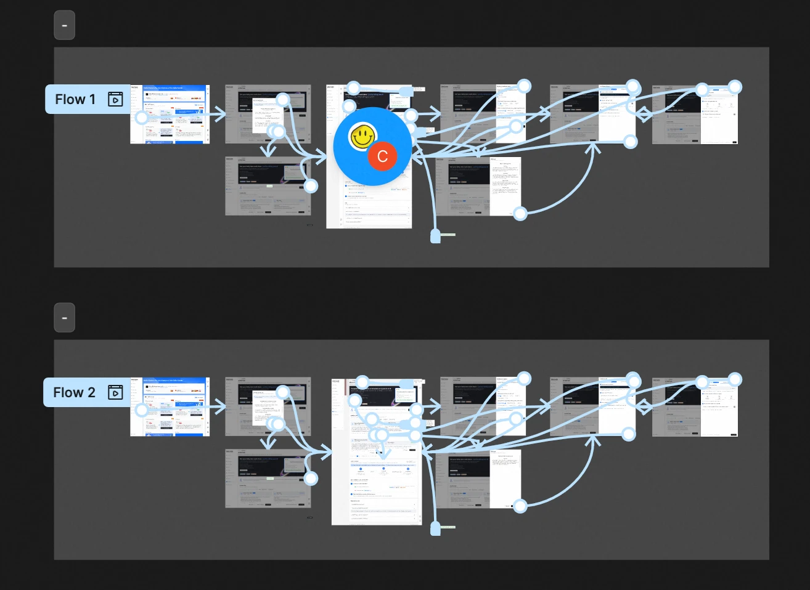
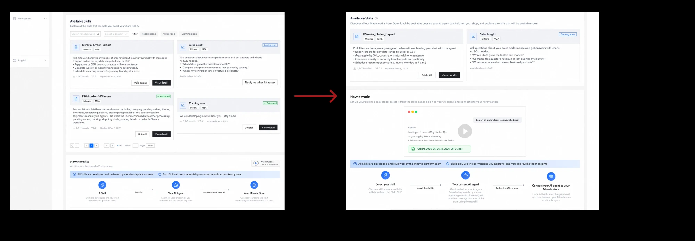
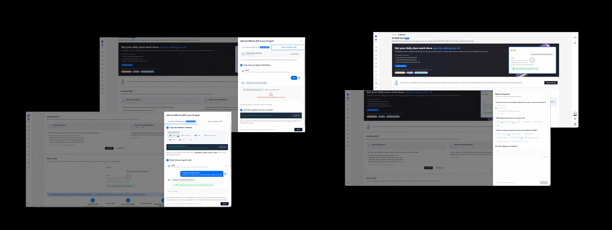

UX Product Content Designer
Research, arquitectura de la información y contenido para las plataformas de sellers de AliExpress y Miravia.
UX Research
IA
Information Architecture
Europa · China
Diseño interfaces para productos digitales end-to-end. En aprendizaje constante, y reforzando la IA como herramienta de trabajo.
Research, arquitectura de la información y contenido para las plataformas de sellers de AliExpress y Miravia.
Contenido y UX para sistemas de infoentretenimiento (HMI) en mercados globales.
Contenido web y comunicación digital basados en datos, tras el bootcamp de UX/UI.
Una muestra de trabajo reciente, de producto con IA en Miravia a un proyecto de bootcamp sobre comunicación interna.
Rediseño del flujo de publicación de productos en el Seller Center de Miravia, incorporando un asistente de IA que ayuda a los sellers a publicar productos sin perderse en un formulario largo y lleno de campos desconocidos. Iterado en varias fases, cada una validada con research y testing de usabilidad.
Skill Hub es un marketplace de "skills" que permite a los sellers de Miravia conectar sus agentes de IA externos a tareas del Seller Center. Cada skill automatiza tareas manuales que podían llegar a ser repetitivas y quitarles mucho tiempo a los sellers.
App interna para trabajadores ferroviarios de ADIF, con fichaje de turno, alertas de incidencias, calendario y llamadas internas. Sprint de dos semanas, con investigación de campo en Atocha-Cercanías y proceso completo de Design Thinking.
Las entrevistas con sellers de Miravia revelaban siempre el mismo problema: publicar un producto a mano era lento y confuso. Era especialmente duro para los sellers nuevos, que se topaban con un formulario larguísimo lleno de campos que no entendían. Algunos llegaron a decir que el proceso les hacía sentir "desesperados" antes incluso de publicar su primer producto.
No fue un único fallo, sino dos problemas superpuestos: los sellers no encontraban la función, y los que la encontraban no confiaban lo suficiente como para terminar. El 74% de retención fue la señal clave: la función funcionaba, lo único que faltaba en el primer intento era transmitir confianza.
El Seller Center dependía de tareas manuales repetitivas (sobre todo exportaciones de datos) y conectar con un ERP exigía conocimientos técnicos que muchos sellers no tenían. La parte difícil era que había que salir de la plataforma para configurar el Skill en un agente de IA externo, algo poco intuitivo para sellers no técnicos pero necesario por las limitaciones de presupuesto.
Probamos una primera versión y otra refinada, con instrucciones más claras y el texto legal correspondiente, para detectar problemas antes de cerrar la dirección final.


Unas instrucciones más claras y las FAQs mejoraron la experiencia, pero muchos sellers seguían esperando que la IA estuviera integrada dentro del Seller Center. Una integración nativa no era viable por restricciones de presupuesto, así que el foco pasó a reducir la confusión y generar confianza dentro de esas limitaciones.

Las herramientas de comunicación de los trabajadores ferroviarios de ADIF estaban desactualizadas y eran poco eficientes. La información circulaba lento entre turnos, y la coordinación fallaba justo en los momentos de más presión.
Proceso completo de Design Thinking en un sprint de dos semanas: investigación de campo en la estación de Atocha-Cercanías, encuestas y entrevistas, síntesis en personas y journey map, y prototipado con tests de usabilidad antes de llegar a la UI final.
ADISK se diseñó como un primer paso, no como una solución completa. Diseñar solo la UI no era suficiente: la solución real necesitaba más que una app, incluía sistemas internos y equipos que debían valorarse desde el principio, junto a quienes conocían esa infraestructura.